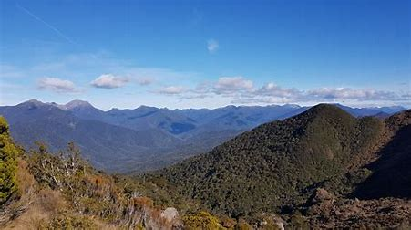
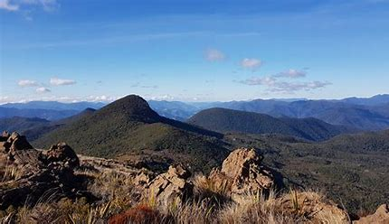

The Dundwa Range is a subrange of the Sivalik Hills in western Nepal and northern Uttar Pradesh, India. It separates the Outer Terai of Balarampur and Shravasti districts in Uttar Pradesh from Deukhuri Valley in Nepal's Dang-Deukhuri and eastern Banke districts. The international border follows the southern edge of this range, leaving a zone of forested Bhabar inside Uttar Pradesh. The Dundwas diverge from other Sivalik ranges at 27°52'N, 83°14'Ein western Kapilvastu, extending 160 km W and WNW across Dang Deukhuri District and into Banke -- within 20 km of Nepalganj -- before descending into the alluvial plains. The Dundwas divert the Rapti some 100 km west before the river resumes its southward course toward the Ganges. Nepal's main E-W Mahendra Highway climbs 400 metres from the Outer Terai to cross this range at 28°47'N, 82°49'E. Summit elevations diminish from east to west with some exceeding 1,400m near the eastern end of the range. ~930m Shiv Gadi rises 4 km west of Mahendra Highway. 80 km further west there is a ~790m summit, then the crest progressively loses elevation to 190m at the lower end of Deukhuri Valley. Koilabas bazaar, Nepal is located on the international border in this range.
Dundwa Range

| Dundwa Range | |
|---|---|
|  | |
| Highest Peak | |
| Peak | Nanda Devi |
| Elevation | 241 metres (791 feet) |
| Coordinates | 29°00′N 80°00′E |
| Geography | |
| Countries | India |
| Borders on | Nepal and Uttar Pradesh |